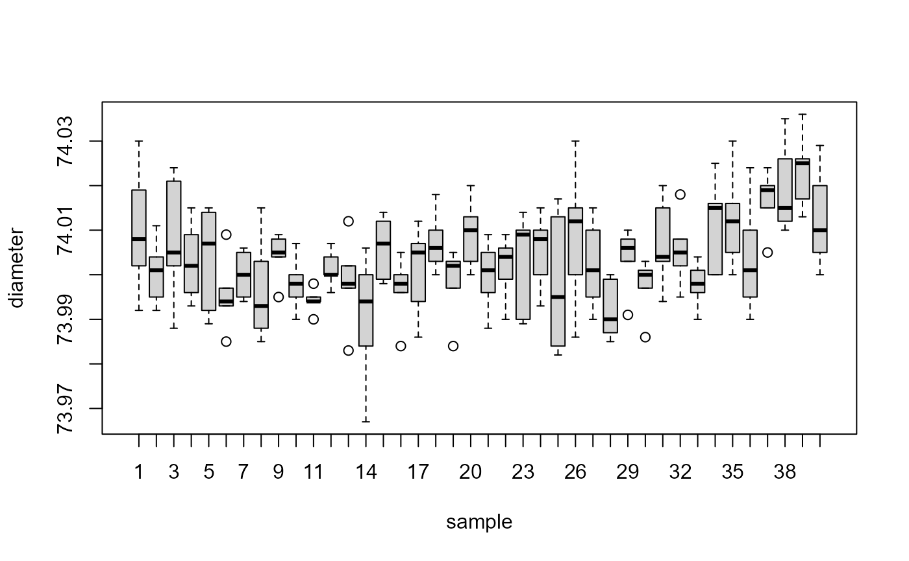

pistonrings.RdPiston rings for an automotive engine are produced by a forging process. The inside diameter of the rings manufactured by the process is measured on 25 samples, each of size 5, drawn from a process being considered 'in control'.
A data frame with 200 observations on the following 3 variables.
a numeric vector
sample ID
trial sample indicator (TRUE/FALSE)
Montgomery, D.C. (1991) Introduction to Statistical Quality Control, 2nd ed, New York, John Wiley & Sons, pp. 206--213
#> #> #>#> diameter sample trial #> Min. :73.97 Min. : 1.00 Mode :logical #> 1st Qu.:74.00 1st Qu.:10.75 FALSE:75 #> Median :74.00 Median :20.50 TRUE :125 #> Mean :74.00 Mean :20.50 #> 3rd Qu.:74.01 3rd Qu.:30.25 #> Max. :74.04 Max. :40.00